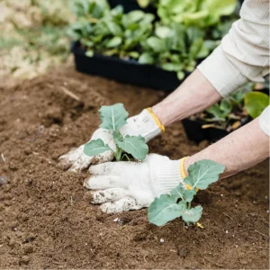

Nos Services





Avec des années d'expérience dans le domaine du jardinage et du paysagisme, notre équipe possède les compétences et le savoir-faire pour réaliser des projets de toutes tailles.
Chaque jardin est unique.
Nous offrons des solutions sur mesure adaptées à vos
goûts et à vos besoins spécifiques.
Nous nous engageons à fournir des services de la plus haute qualité avec une attention particulière aux détails et à la satisfaction de nos clients.
"Je suis ravie du travail effectué par Lucas Jardin.
Mon jardin est magnifique
et leurs services sont impeccables !"
~Sophie M.~
"Professionnels, courtois et efficaces, Lucas Jardin a transformé mon espace extérieur en un véritable havre de paix ! "
~Marc D.~
"Grâce à Lucas Jardins, mon jardin a été complètement transformé en un lieu de détente pour toute la famille. Leur équipe est professionnelle, ponctuelle et compétente. Je recommande vivement leurs services à tous ceux qui souhaitent avoir un jardin bien entretenu."
~Clara B.~